GrowHub Accelerator Platform — v1.0
| Technologie | Rôle | Version |
|---|---|---|
| React 18 | Framework UI | 18.x |
| TypeScript | Typage statique | 5.x |
| Vite | Bundler & Dev Server | 5.x |
| Tailwind CSS | Styles utilitaires | 3.x |
| shadcn/ui | Composants UI | Latest |
| TanStack Query | Gestion de données async | 5.x |
| React Router | Routage SPA | 6.x |
| Framer Motion | Animations | 11.x |
| Recharts | Graphiques & visualisations | 2.x |
| Service | Rôle |
|---|---|
| PostgreSQL | Base de données relationnelle |
| Auth | Authentification email/mot de passe |
| Edge Functions (Deno) | Logique serveur (IA, webhooks) |
| Storage | Stockage fichiers (avatars, documents, logos) |
| Realtime | WebSocket pour messagerie en temps réel |
| Row Level Security | Sécurité au niveau ligne |
src/ ├── components/ │ ├── auth/ → ProtectedRoute, AdminRoute │ ├── dialogs/ → 14 dialogues de création/édition │ ├── grants/ → 10 onglets GTS (Grants Tracking System) │ ├── layout/ → AppLayout, AppSidebar, AppTopbar, SearchDialog │ ├── lms/ → AICourseGenerator, AIAssistantChat │ ├── shared/ → Composants réutilisables (GhButton, GhCard, Pill, StatCard...) │ ├── startups/ → StartupKpiTab │ └── ui/ → 45+ composants shadcn/ui ├── hooks/ → 28+ hooks personnalisés (données, auth, temps réel) ├── pages/ │ ├── app/ → 30+ pages applicatives │ └── auth/ → Login, Signup, ForgotPassword, ResetPassword ├── lib/ → Utilitaires (export CSV/PDF, work packages) └── integrations/ → Client Supabase auto-généré
/app/* → Protégé par ProtectedRoute (authentification requise)/app/utilisateurs → Protégé par AdminRoute (Super Admin / Coordinateur uniquement)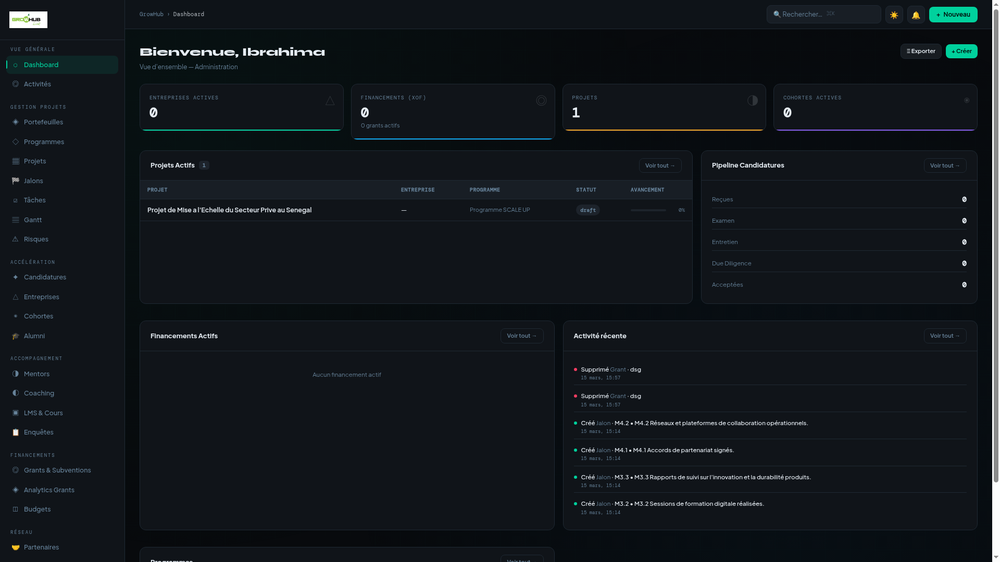
Tableau de bord avec stats consolidées, projets actifs et activité récente
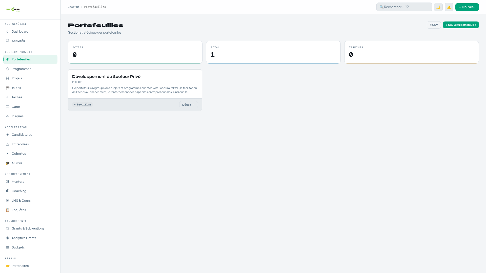
Gestion stratégique des portefeuilles de projets
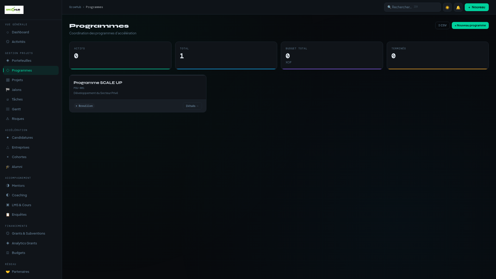
Coordination des programmes d'accélération
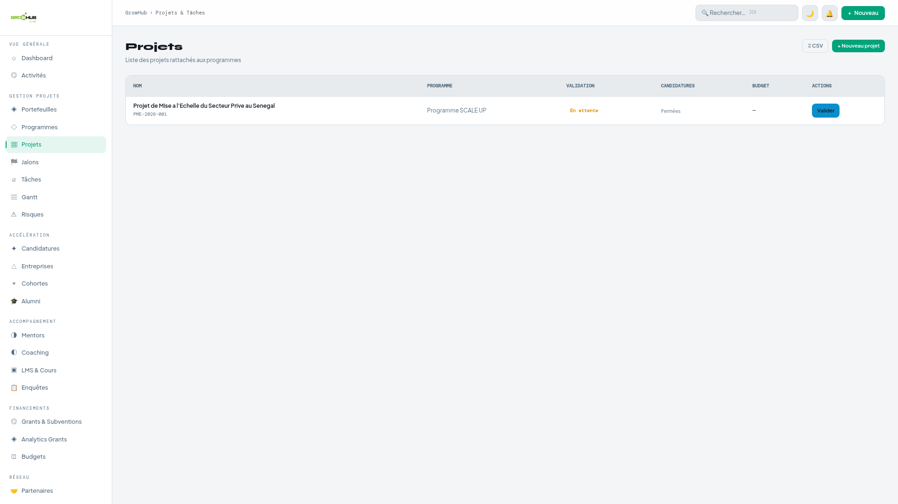
Liste des projets avec validation et progression
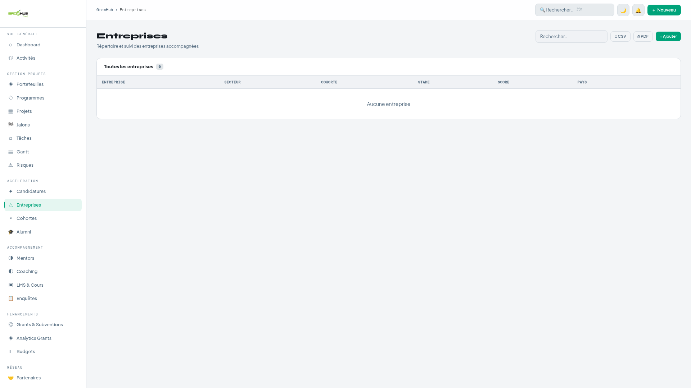
Répertoire des entreprises accompagnées avec filtres et export
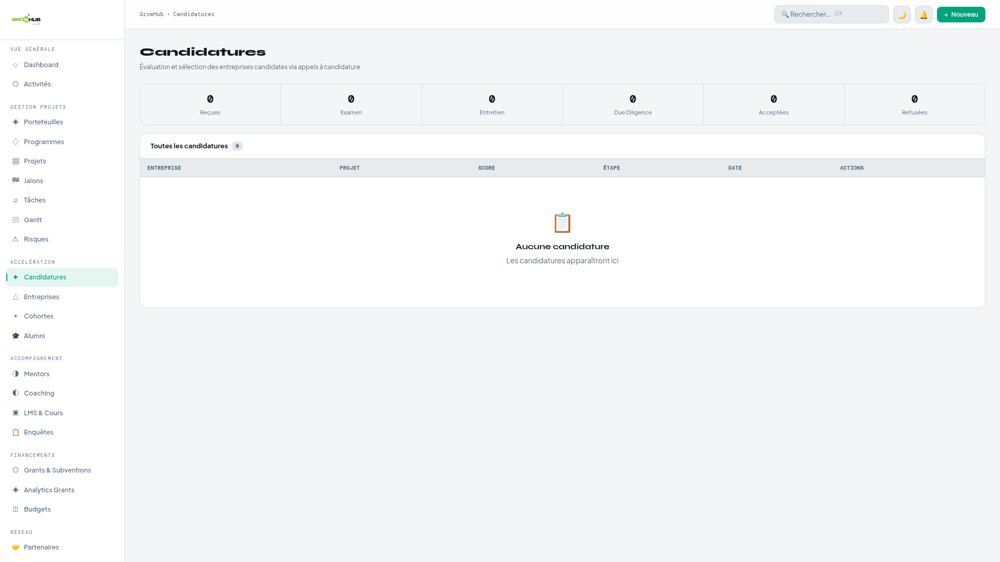
Pipeline de sélection en 6 étapes
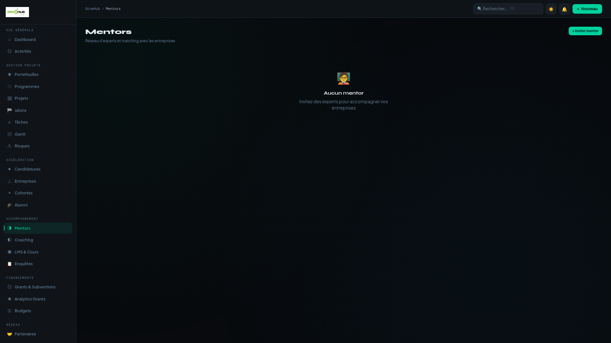
Réseau d'experts avec matching entreprises
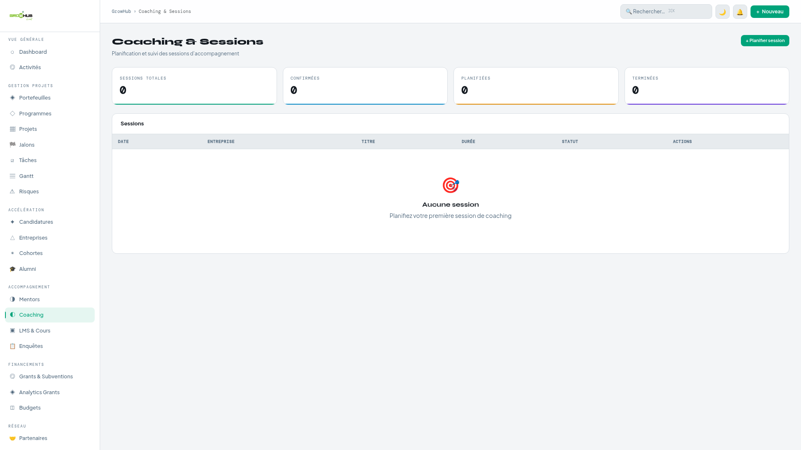
Planification et suivi des sessions de coaching
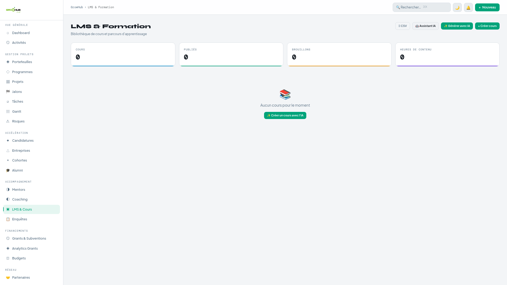
Plateforme e-learning avec génération de cours par IA
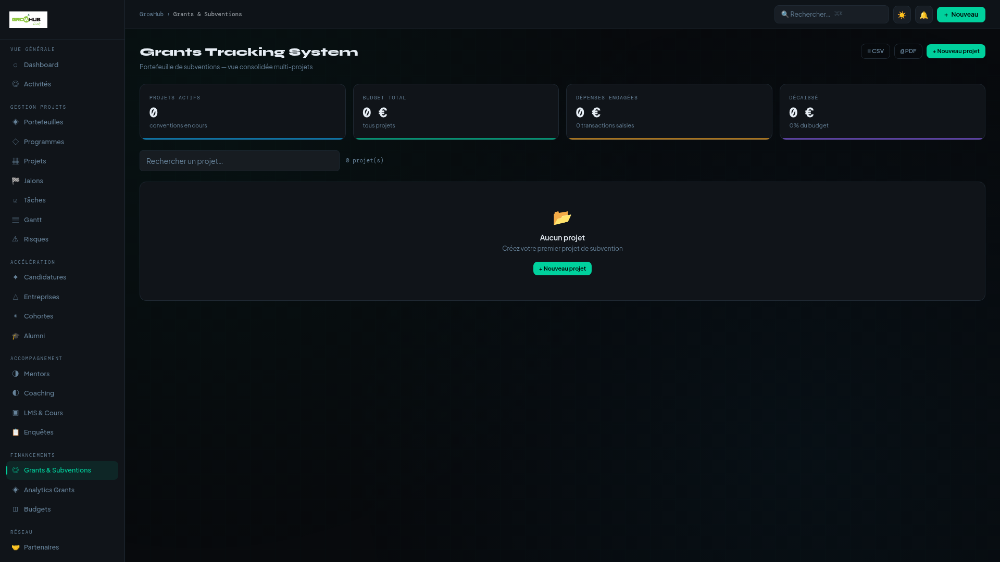
Gestion de subventions avec budget, transactions et décaissements
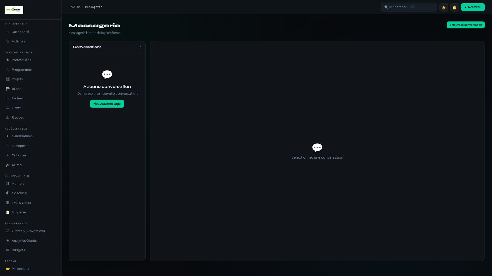
Messagerie interne en temps réel
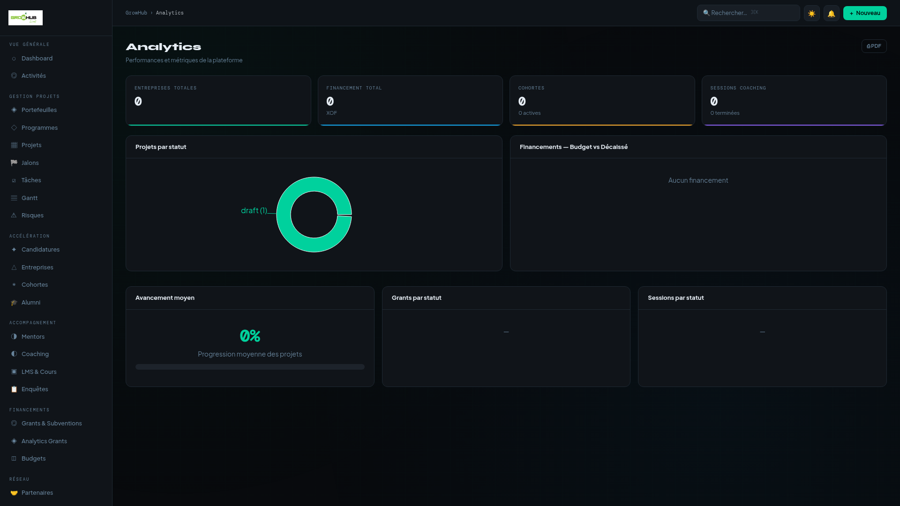
Tableaux de bord analytiques avec graphiques interactifs
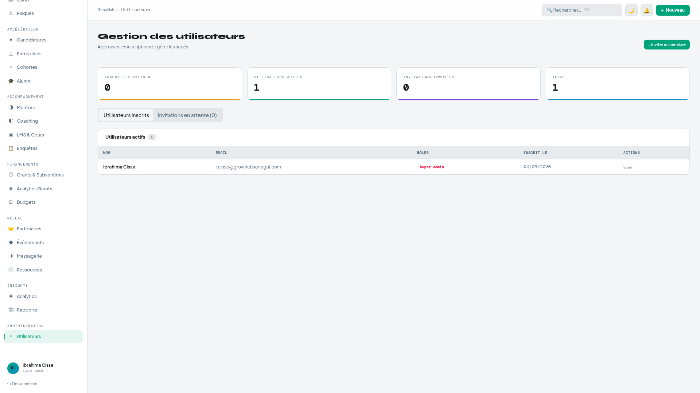
Administration des utilisateurs, rôles et invitations
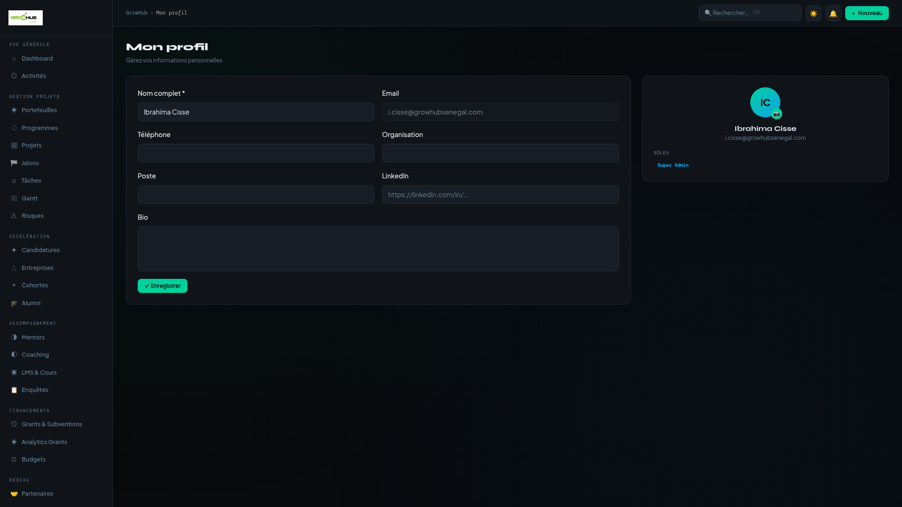
Page de profil avec avatar, informations et rôles
| Table | Description | Relations clés |
|---|---|---|
| profiles | Profils utilisateurs | → auth.users |
| user_roles | Rôles utilisateurs | → auth.users |
| portfolios | Portefeuilles stratégiques | owner_id |
| programs | Programmes d'accélération | → portfolios |
| projects | Projets opérationnels | → programs, startups |
| cohorts | Cohortes d'entreprises | → projects |
| startups | Entreprises accompagnées | → cohorts, founder_id |
| startup_kpis | Indicateurs de performance | → startups |
| applications | Candidatures | → programs, cohorts, startups |
| mentor_profiles | Profils des mentors | → profiles |
| mentor_matches | Matching mentor-startup | → mentor_profiles, startups |
| coaching_sessions | Sessions de coaching | → mentor_profiles, startups |
| milestones | Jalons des projets | → projects |
| tasks | Tâches assignées | → projects, assignee_id |
| risks | Registre des risques | → projects |
| grants | Subventions | → programs |
| grant_activities | Activités de subvention | → grants |
| grant_disbursements | Décaissements | → grants |
| grant_transactions | Transactions financières | → grants, grant_reports |
| grant_reports | Rapports financiers | → grants |
| grant_documents | Documents justificatifs | → grants |
| grant_indicators | Indicateurs de résultat | → grants |
| grant_addendums | Avenants | → grants |
| budgets | Lignes budgétaires | → projects, grants |
| events | Événements | → programs |
| partners | Partenaires/Bailleurs | → programs |
| courses | Cours e-learning | → programs |
| course_modules | Modules de cours | → courses |
| surveys | Enquêtes | → programs |
| conversations | Conversations | → participants |
| messages | Messages | → conversations |
| notifications | Notifications | → user_id |
| activity_log | Journal d'audit | → user_id |
| invitations | Invitations | → invited_by |
| Rôle | Description | Attribution |
|---|---|---|
| super_admin | Accès total, gestion utilisateurs | Premier inscrit (auto) |
| coordinator | Gestion programmes, projets, grants | Invitation / attribution admin |
| project_manager | Gestion des projets assignés | Invitation / attribution admin |
| mentor | Sessions coaching, profil expert | Invitation / attribution admin |
| entrepreneur | Vue startup, candidatures, coaching | Par défaut à l'inscription |
| evaluator | Évaluation des candidatures | Invitation / attribution admin |
| Section | Super Admin / Coordinateur | Chef de projet | Entrepreneur / Mentor |
|---|---|---|---|
| Vue Générale | ✅ | ✅ | ❌ |
| Gestion Projets | ✅ | ✅ | ❌ |
| Accélération | ✅ | ✅ | ❌ |
| Accompagnement | ✅ | ✅ | ✅ |
| Financements | ✅ | ✅ | ❌ |
| Réseau | ✅ | ✅ | ✅ |
| Insights | ✅ | ✅ | ❌ |
| Administration | ✅ | ❌ | ❌ |
| Table | Lecture | Écriture |
|---|---|---|
| profiles | Propre profil + profils approuvés + admins voient tout | Propre profil uniquement |
| notifications | 🔒 Propres notifications uniquement | Propre user_id uniquement |
| messages | 🔒 Membres de la conversation | Membres de la conversation |
| coaching_sessions | 🔒 Mentor, fondateur startup, ou admin | Admin + mentor (update) |
| applications | 🔒 Candidat, évaluateur, ou admin | Admin (tout) + candidat (insert) |
| projects | Tous les authentifiés | Admin / coordinateur |
| grants | Tous les authentifiés | Admin / coordinateur |
| startups | Tous les authentifiés | Admin / coordinateur + fondateur |
| courses | Tous (publiés pour non-admins) | Admin / coordinateur |
| resources | Tous (publics pour non-admins) | Admin / coordinateur |
| surveys | Tous (actives pour non-admins) | Admin / coordinateur |
| user_roles | Admin uniquement | Admin uniquement |
| invitations | Admin uniquement | Admin uniquement |
Recherche instantanée sur 8+ entités : projets, programmes, entreprises, mentors, tâches, événements, partenaires, cours.
Notifications automatiques : assignation de tâches, changements de statut de candidature, sessions coaching, jalons atteints, risques critiques, nouveaux messages.
Génération de cours structurés par IA (modules, quiz, exercices). Assistant pédagogique en streaming pour l'aide à la rédaction de contenu.
Export CSV et PDF sur les pages principales : entreprises, projets, grants, budgets, analytics.
Système complet de suivi des subventions : 10 onglets spécialisés (activités, décaissements, transactions, rapports, documents, indicateurs, avenants, historique des modifications).
| Composant | Service | Détails |
|---|---|---|
| Frontend | Lovable Hosting | CDN global, HTTPS automatique |
| Backend | Lovable Cloud | PostgreSQL, Auth, Realtime, Storage |
| Edge Functions | Deno Deploy | elearning-ai (génération IA) |
| Stockage fichiers | 5 buckets | avatars, logos, resources, receipts, grant-documents |
© 2026 GrowHub Accelerator — Rapport de livraison v1.0
Généré automatiquement le 16/03/2026